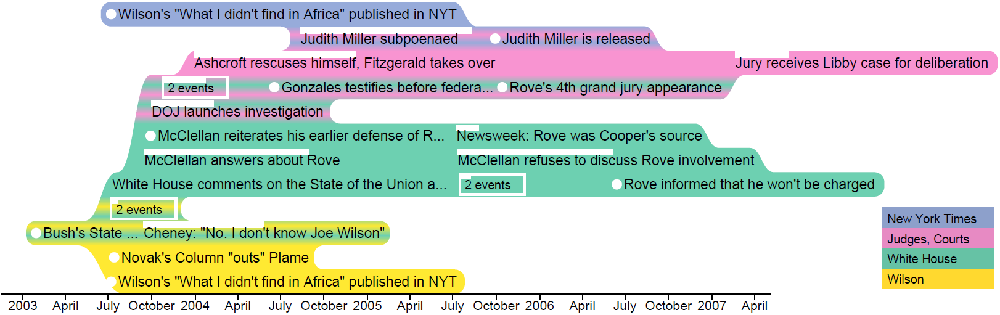

TimeSets: Timeline Visualization with Set Relations

Project Description
We introduce a novel timeline visualization technique, TimeSets, that helps make sense of complex temporal datasets by showing the set relationships among individual events. TimeSets visually groups events that share a topic, such as a place or people, while preserving their temporal order. It dynamically adjusts the level of detail for each event to suit the amount of information and display estate. Various design options were explored to address issues such as one event belonging to multiple topics. A controlled experiment was conducted to evaluate its effectiveness by comparing it to the KelpFusion method. The results showed significant advantage in accuracy and user preference.
Videos
Version presented in IVS paper
A working version with new visual represenation for set intersection
Papers
- P. H. Nguyen, K. Xu, R. Walker, and B. L. William Wong. TimeSets: Timeline Visualization with Set Relations. Information Visualization, 2015